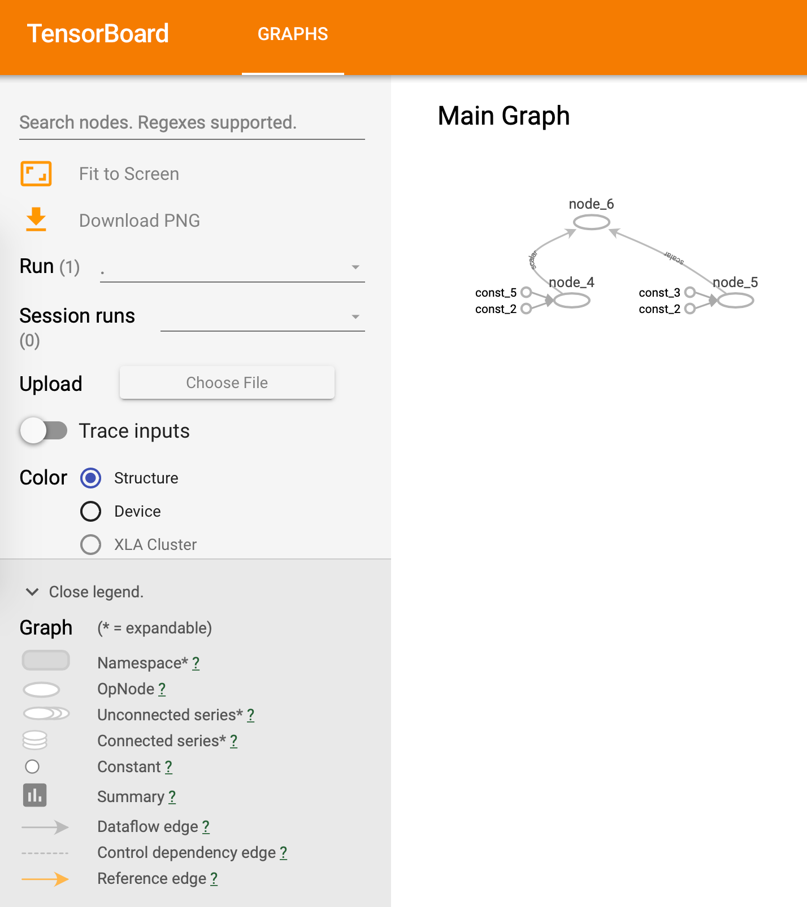
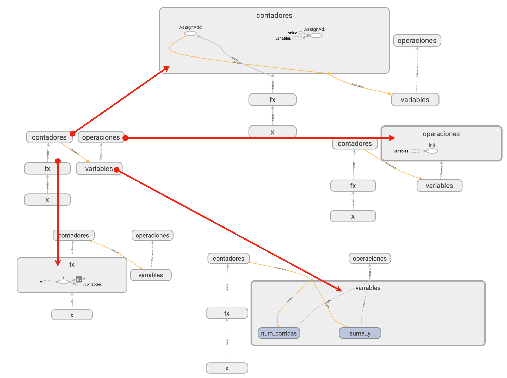
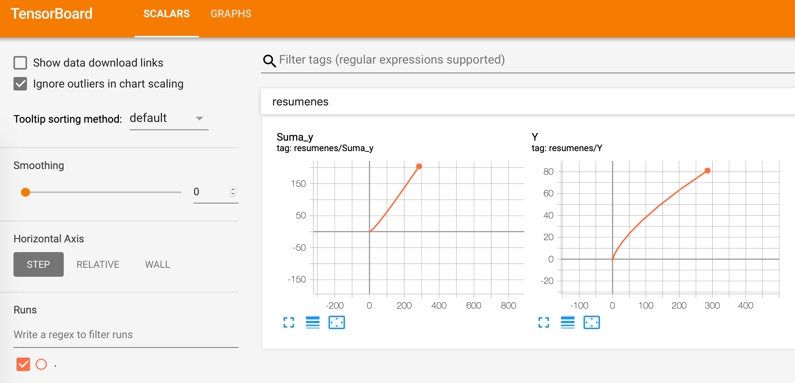

Uso de TensorBoard desde R¶
TensorBoard es una herramienta para visualizar gráficas computacionales, facilitar su comprensión y analizar resultados provenientes de la ejecución de modelos. TensorBoard usa la información almacenada en archivos de eventos generados por TensorFlow. La página https://www.tensorflow.org/guide/summaries_and_tensorboard presenta información detallada sobre su uso desde Python; la página https://tensorflow.rstudio.com/tensorflow/articles/howto_summaries_and_tensorboard.html presenta información adicional sobre su uso desde el lenguaje R. El lector debe consultar estas referencias para profundizar su conocimiento sobre TensorBoard.
Para abordar los temas tratados en este documento es necesario que el lector domine los temas abordados en el documento Cómputos usando el API de bajo nivel de TensorFlow for R.
Esta lección presenta una introducción al uso de TensorBoard desde R, y especificamente enseña:
Cómo visualizar flujos de datos.
Cómo organizar una gráfica usando ámbitos.
Cómo consturir resumenes de ejecuciones.
Preparación¶
[1]:
##
## Se importa la librería
##
library(tensorflow)
Visualización de flujos de datos en TensorBoard¶
Creación de la gráfica de flujo de datos¶
TensorBoard es una herramienta que permite visualizar las gráficas de flujo de datos generadas por TensorFlow. A continuación se construye la gráfica para la expresión 5 * 2 - (2 + 3).
[2]:
##
## Se crea una nueva gráfica de flujo de datos
##
g <- tf$Graph()
##
## Se usa la gráfica de flujo de datos g como
## la gráfica por defecto
##
with(g$as_default(), {
node1 <- tf$constant(5.0) # Tensor []
node2 <- tf$constant(2.0) # Tensor []
node3 <- tf$constant(3.0) # Tensor []
node4 <- tf$multiply(node1, node2) # Operación *
node5 <- tf$add(node3, node2) # Operación +
node6 <- tf$subtract(node4, node5) # Operación -
##
## summary permite contruir los resumenes que se desean
## visualizar en TensorBoard. La función FileWriter
## escribe en disco la información de la gráfica creada.
## Aquí se usa la carpeta /tmp/example/ para almacenar
## la información.
##
tf$summary$FileWriter('/tmp/example', g)
})
<tensorflow.python.summary.writer.writer.FileWriter>
Visualización de la gráfica en TensorBoard¶
Para visualizar el grafo, puede usar una de las siguientes alternativas:
Lanzar
TensorBoarddesde el Terminal usando:tensorboard –logdir=»/tmp/example»
Abra el explorador de internet en la dirección http://localhost:6006
Abrir la extensión TensorBoards en la pestaña lateral de Jupyter Lab.
Nota: Si desea escribir la gráfica al directorio actual puede usar
tf$summary$FileWriter('.', g)
y para abrirla en TensorBoard
tensorboard --logdir .
El gráfico generado es el siguiente:

División de una gráfica de flujo de datos en ámbitos¶
Es posible crear subgráficas dentro de una gráfica principal usando ámbitos. Esto permite organizar un gráfico complejo en partes que pueden expandirse o contraerse individualmente. El procedimiento consiste en crear cada ámbito y asociar a este los nodos. Por ejemplo, en el siguiente gráfico se crean los ámbitos A y B y se asocian tres nodos a cada uno.
Creación de la gráfica¶
[3]:
##
## Crea una nueva gráfica
##
g = tf$Graph()
##
## Crea los nodos dentro de la grafica g
##
with(g$as_default(),{
##
## Se crea el ámbito A. La palabra reservada with
## permite asociar los tres nodos creados (a, b y c)
## al ámbito A.
##
with(tf$name_scope('A'), {
a <- tf$add(1, 2, name='Aa')
b <- tf$add(3, 4, name='Ab')
c <- tf$multiply(a, b, name='Ac')
## note que el nodo c es el raíz para este ámbito
})
##
## Se crea el ámbito B con tres nodos (d, e, f)
##
with(tf$name_scope('B'), {
d <- tf$add(5, 6, name='Bd')
e <- tf$add(7, 8, name='Be')
f <- tf$multiply(d, e, name='Bf')
## note que el nodo f es el raíz para este ámbito
})
##
## Este es el nodo raíz de los dos ámbitos
##
h <- tf$subtract(c, f, 'raiz')
##
## Se escribe la gráfica de flujo de datos al disco
## en el directorio /tmp/ambito
##
tf$summary$FileWriter('/tmp/ambito', g)
})
<tensorflow.python.summary.writer.writer.FileWriter>
Visualización de la gráfica en TensorBoard¶
Para abrir la gráfica, use el comando tensorboard --logir=/tmp/ambito en términal y luego habra la dirección http://localhost/6006 en el explorador.
La gráfica generada es la siguiente:

donde la parte superior corresponde a la grafica colapsada y la parte inferior a la gráfica expandida.
Construcción de resumenes de ejecuciones en TensorBoard¶
TensorBoard también puede ser utilizado para visualizar información relacionada con la ejecución de un cómputo. En el siguiente ejemplo, se muestra como organizar en ámbitos el código en un programa de TensorFlow, la forma de construir resumenes, y de visualizar el reporte generado en TensorBoard. En este ejemplo, se computa \(y=f(x)\) para diferentes valores de \(x\); adicionalmente, se almacena la cantidad de corridas y el valor de \(\sum f(x)\) como información de la corrida.
Implementación¶
[4]:
##
## Borra el directorio de trabajo en cada corrida.
## Se ejecuta el comando de Linux `rm -rf /tmp/example`
## el cual borra dicha carpeta del disco duro.
##
system("rm -rf /tmp/example")
##
## Crea una gráfica
##
graph <- tf$Graph()
##
## Se usa la nueva gráfica como la gráfica por defecto
##
with(graph$as_default(), {
##
## Se definen las variables a usar en la corrida dentro
## del ámbito `variables`
##
with(tf$name_scope('variables'), {
num_corridas <- tf$Variable(0, name='num_corridas')
suma_y <- tf$Variable(0.0, name='suma_y')
})
##
## Se crea el ámbito `x`, en el cual se define
## a x como un placeholder. Recuede que la codificación
## de la función es independiente de x, y el valor de x
## se suministra cada vez que se llame a f(x)
##
with(tf$name_scope('x'), {
x <- tf$placeholder(tf$float32, shape=c(), name='placeholder_x')
})
##
## Este ámbito contiene el código de la función f(x).
## Es decir, evalua f(x) = x^2
##
with(tf$name_scope('fx'), {
y <- tf$square(x, name='y')
})
##
## Se crea el ámbito `contadores`, el cual contiene
## la información intermedia, que en este caso corresponde
## a la sumatoria de f(x) y el número de ejecuciones.
##
with(tf$name_scope('contadores'), {
incr_suma_y <- suma_y$assign_add(y)
incr_num_corridas = num_corridas$assign_add(1)
})
##
## Se crean los resumenes
##
with(tf$name_scope('resumenes'), {
tf$summary$scalar('Y', y)
tf$summary$scalar('Suma_y', suma_y)
})
##
## Inicializa las variables y los resumenes
##
with(tf$name_scope('operaciones'), {
## Paso obligatorio para inicializar las variables
## en TensorFlow
init <- tf$global_variables_initializer()
##
## Genera un nodo que permite evaluar todos
## los resumenes definidos en el ámbito `resumenes`
##
resumenes <- tf$summary$merge_all()
})
})
##
## Ejecución
## Se crea una sesión para realizar los cómputos
##
sess <- tf$Session(graph=graph)
##
## Se crea el directorio donde se almacenarán los resultados
##
writer <- tf$summary$FileWriter('/tmp/example', graph)
##
## Inicialización de las variables
##
sess$run(init)
##
## Se llama a la función f(x) para x = 0, 1, 2, ...
##
for(a in 1:10)
{
## Ejecuta la gráfica
result <- sess$run(
c(y, # Computa y = f(x)
incr_suma_y, # sumatoria de f(x)
resumenes), # Genera el resumen (Y, Suma_Y)
feed_dict=dict(x=a)) # Pasa el valor de x a TensorFlow
## Almacena los resultados de esta llamada en el disco duro
writer$add_summary(result[[3]], global_step=result[[2]])
}
## se vacia el buffer al disco duro y se cierra la conexión
writer$flush()
writer$close()
## Se cierra la sesión
sess$close()
Ejecución y visualización en TensorBoard¶
La organización del código en ámbitos permite su mejor organización. En la siguiente figura se muestra la gráfica computacional generada.

Los gráficos generados por los resumenes son los siguientes:
